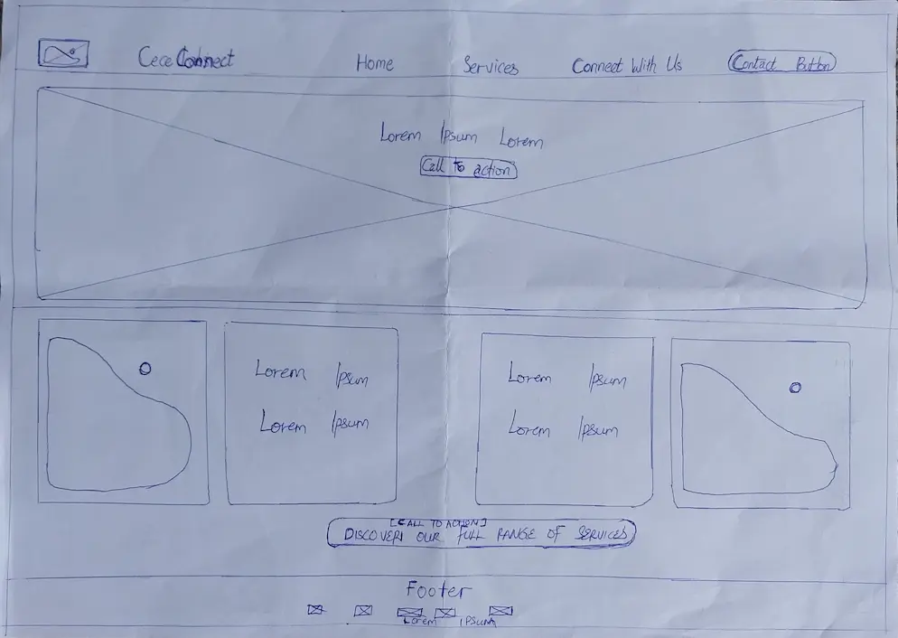
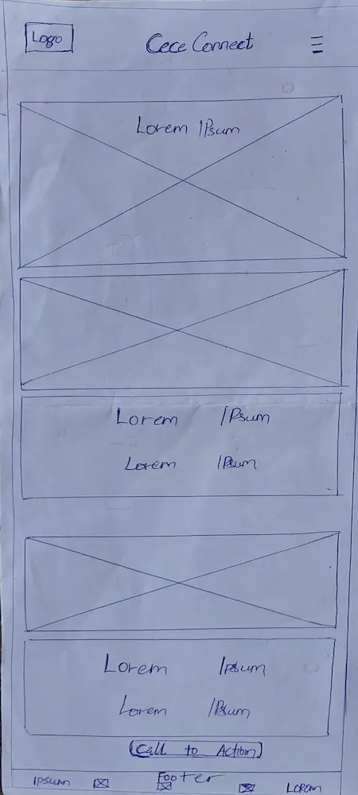

Site Name
The site name consist of two words. "Cece" is the alias of a friend who shares the same vision with me. "Connect" represents our vision to Connect our target audience to amazing healthcare services.
Site Purpose
The primary purpose of the CeceConnect website is to serve as a compelling informational portal that introduces visitors to our mission, vision, and the innovative services we offer to bridge healthcare accessibility gaps in our locale.
Through the power of storytelling, the site will emotionally connect with users, illustrating the real-world impact of our work and guiding them towards understanding how our solutions can lead to better health outcomes.
It aims to inform, inspire trust, and provide clear pathways for engagement and inquiry.
Scenerios
Scenario 1: The Concerned Family Member
Audience: A mother in a remote area whose child needs to see a specialist. She's worried about her child's health and the difficulty of finding specialized care nearby.
Question: "My child has been sick for a while, and our local clinic can't help. We live far from the city, and I don't know where to find a specialist who can see him.
Can your site really help me find a doctor for my child who understands our situation and isn't too far away?"
Scenario 2: The Proactive Individual
Audience: A health-conscious individual who wants to manage their appointments efficiently and access reliable health information. They are comfortable with technology and seek convenience.
Question: "I'm tired of calling multiple clinics just to book an appointment, and I often get conflicting health advice online. Can I truly book appointments directly through this platform, and is the health information provided here trustworthy and easy to understand?"
Scenario 3: The Potential Partner/Provider
Audience: A local clinic administrator struggling with patient outreach and appointment scheduling, or a community health advocate looking for innovative solutions. They are evaluating the platform's potential for collaboration.
Question: "Our clinic is struggling to reach new patients, especially in underserved areas, and our current scheduling system is inefficient. We also want to collaborate with initiatives that genuinely improve community health. How can CeceConnect help us streamline our operations and connect with more patients who truly need our services?"
Color Schema
Primary color: Deep Blue - #2874A6
Usage: Main navigation elements, primary buttons, , important headings, and backgrounds of key sections that convey trust and authority (e.g., the hero section, main calls to action).
Secondary Color: Light Blue - #5DADE2
Usage: Secondary call-to-action buttons, active states in navigation, subheadings, icons, and as a lighter background for content blocks to create visual separation and a sense of openness.
Accent Color: Green - #2ECC71
Usage: Reserved for highlighting success stories, positive feedback indicators, confirmation messages, small interactive elements, and illustrations that emphasize well-being or progress. Its sparing use will ensure it stands out.
Neutral Colors
Offwhite Gray - #F8F9FA
Usage: The primary background color for the main content areas to ensure high readability and a clean aesthetic
Charcoal - #2C3E50
Usage: The main color for body text, footer text, and borders that require strong contrast and legibility.
Light Blue-Gray - #ECF0F1
Usage: Used for subtle dividers, card backgrounds, or alternate row backgrounds to provide visual structure without being distracting.
Typography
Merriweather
Usage: Headings H1, H2, H3
Inter
Body Text - Paragraphs, Lists
Wireframe
Large View
Mobile
